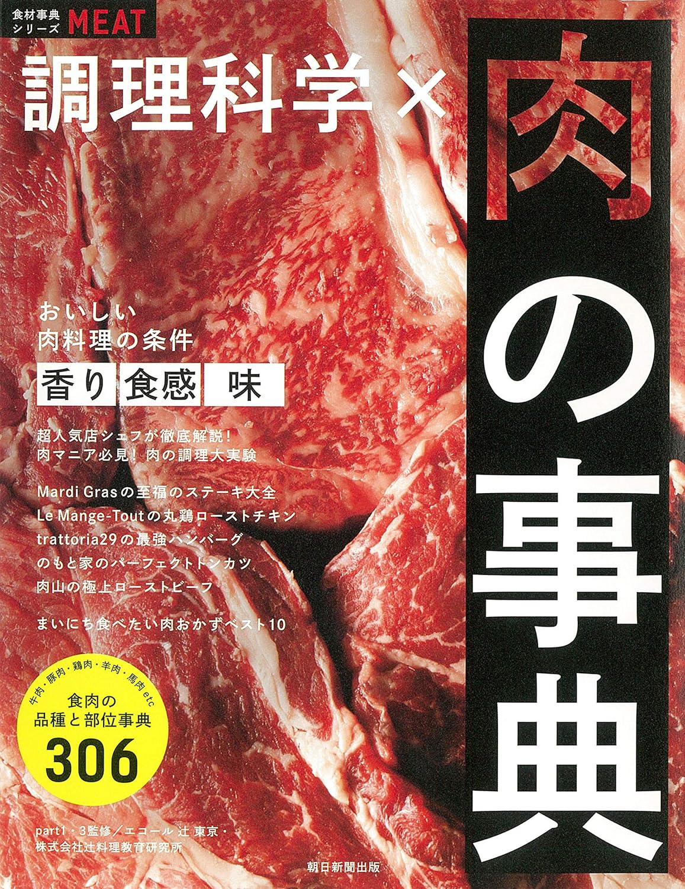
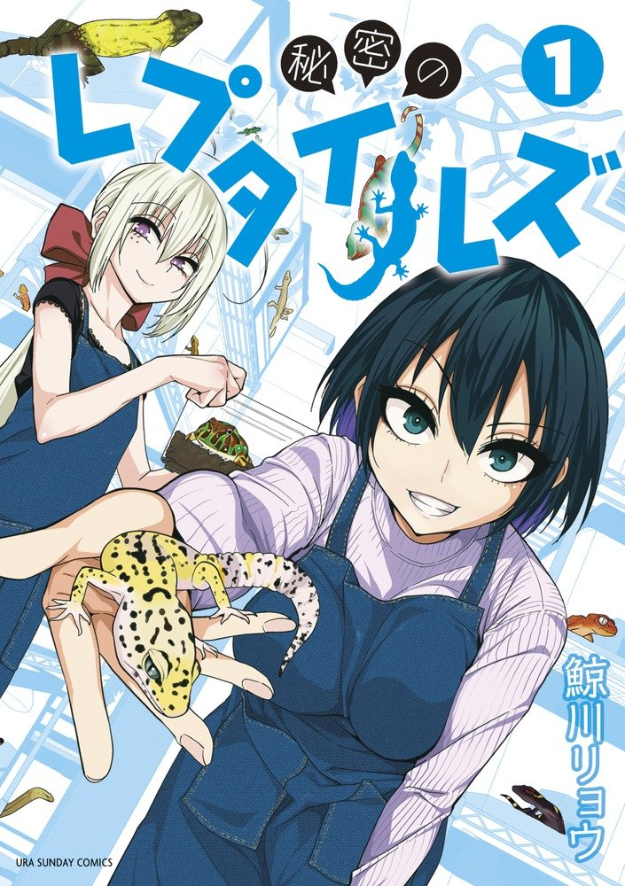

たくみの趣味
たくみが自分の趣味を勝手におすすめするコーナー。

調理科学×肉の事典
何度で肉のどんな成分が溶けるのか、肉の美味しさとはなんなのか、といった理系にはたまらないテーマをめちゃくちゃしっかり扱ってくれている本。肉の部位についての解説も詳しく、焼肉屋さんに行くのが楽しくなる。オールカラーなのが地味にすごい。
共感SNS 丸く尖る発信で仕事を創る ゆうこす著
ネットを使って個人で仕事をしている自分にとってSNS運用は生命線。色々な人をリサーチして、「この人のSNS運用がスゴい！」と思ったのがゆうこすさんである。そんなゆうこすさんが書いたSNS本がこちら。特に、"トラブルは「好き」が増すチャンス！"のフレーズには心が動かされました。でも、実際にお会いしたらメチャクチャ天然キャラでした。

秘密のレプタイルズ
平凡なサラリーマンがふと立ち寄ったペットショップで爬虫類の沼にハマっていくお話し。ギャグも面白いし、何より爬虫類に対する知識がめちゃくちゃ深まるのでオススメ。ちなみに自分は今ヒョウモントカゲモドキを飼っていて、次はフトアゴヒゲトカゲとクレステッドゲッコーを飼いたい。